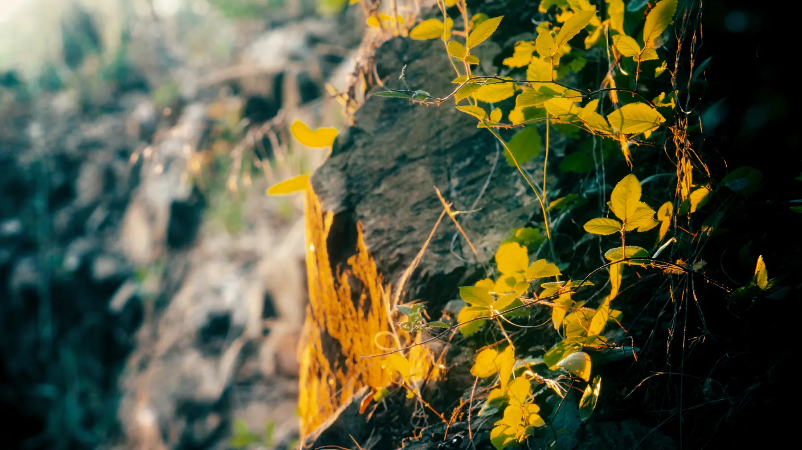
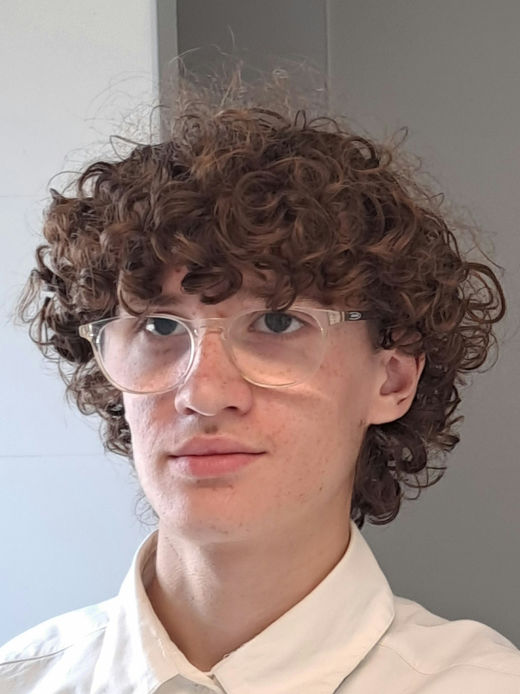
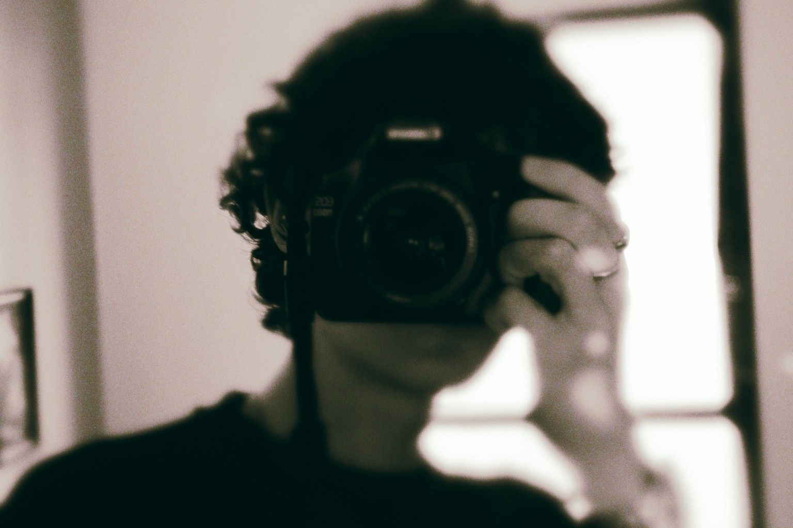

Portfolio 2026
Motion design · Montage · Photographie
Gauthier
Besnard
Voici tous mes projets personnels.
Découvrir mes projets
Ma sélection
Projets
5 travaux
Photographie & colorimétrie
Canon EOS 1100D
À propos de moi


Je m’appelle Gauthier, j’ai 13 ans et je vis près de Nantes, plus précisément à Vertou. J’ai appris le motion design et le montage en autodidacte, principalement à l’aide de YouTube. J’utilise After Effects et j’ai également quelques bases sur Premiere Pro.
Je recherche un stage de 3e dans l’audiovisuel pour découvrir davantage ce milieu et le travail en équipe. À travers ce stage d’observation, je souhaite affiner mon orientation.